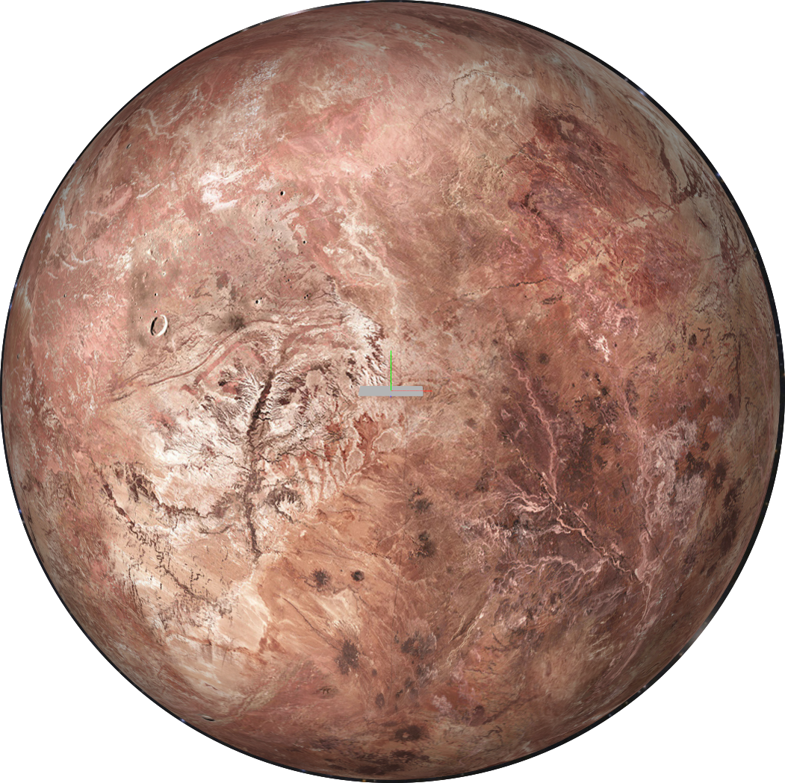

Makemake
Facts
- Makemake is currently visually the second-brightest Kuiper belt object after Pluto
- Spectral analysis of Makemake's surface revealed that methane must be present in the form of large grains at least one centimetre in size. In addition to methane, large amounts of ethane and tholins as well as smaller amounts of ethylene, acetylene and high-mass alkanes (like propane) may be present, most likely created by photolysis of methane by solar radiation.
- Its satellites is Charon, Nix, Hydra, Styx, Kerberos.
- Orbital Period: 307.53
- Orbital Speed: 4.419 km/s
- The average orbital speed is 4.67 km/h.
- Gravity: 0.5 m/s*s
- Makemake's only satellite is MK12.
History
- Makemake was discovered on March 31, 2005, by a team led by Michael E. Brown, and announced on July 29, 2005.
- The name of Makemake, the creator of humanity and god of fertility in the myths of the Rapa Nui, the native people of Easter Island, was chosen in part to preserve the object's connection with Easter.
- IAU(International Astronmo Association), on 24 August 2006, redefined the conditions of the being planet in the solar system and makemake became a dwarf planet.
Highlights
- Scientific Planet: This planet is excellent to research organic substances.
Precaution
- Life becomes quite difficult due to adverse conditions that occur during the transition of the seasons. There are special shelters for these situations.
- We offer a special sprey-product for scientists doing field studies outside the sterile area for safety.
- Anyone who visits this planet, be careful about gravity.